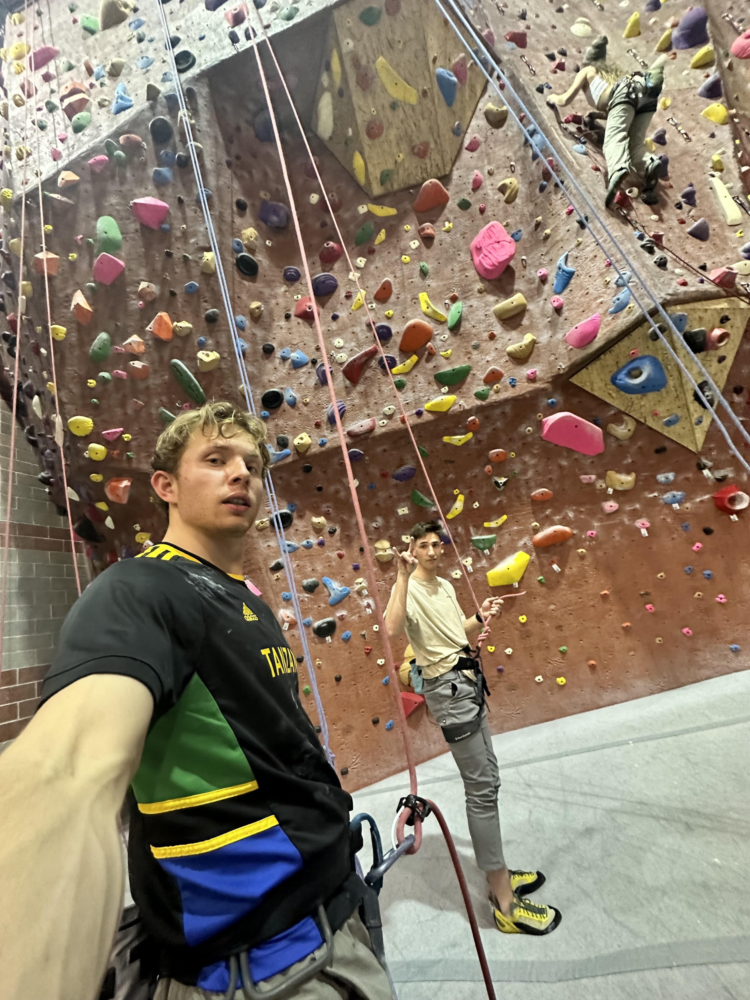
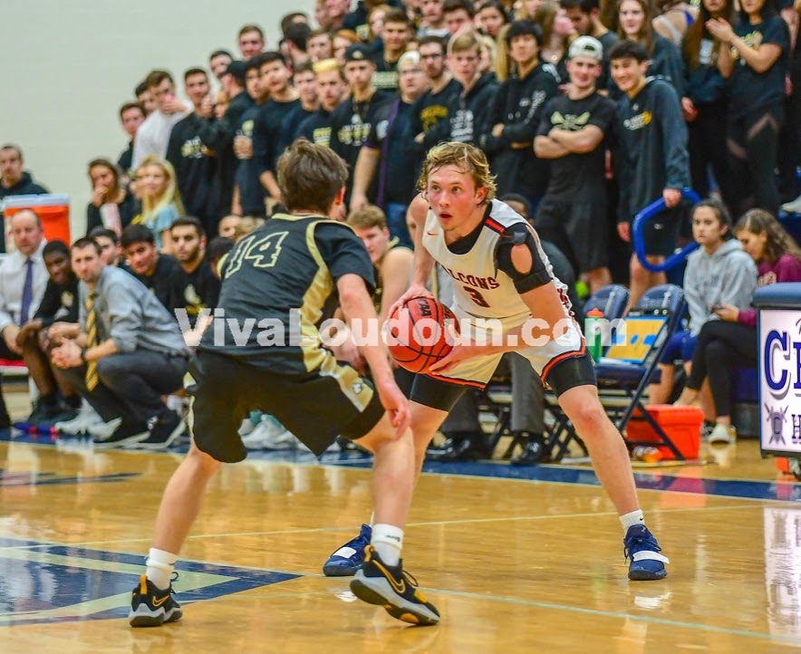
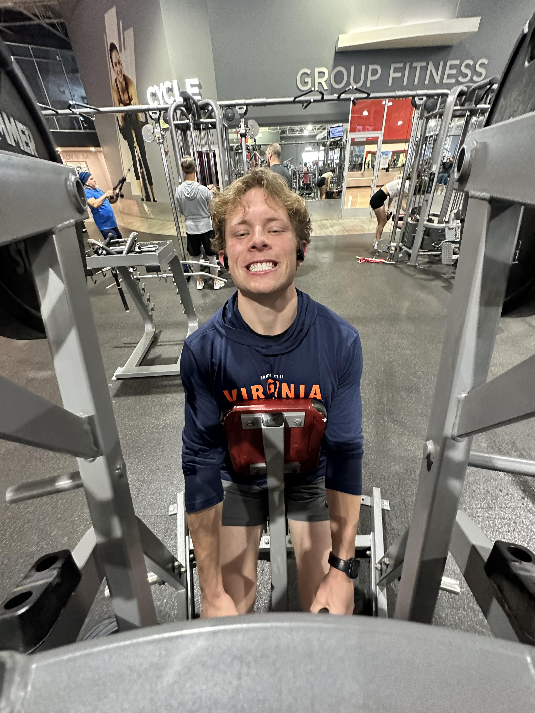
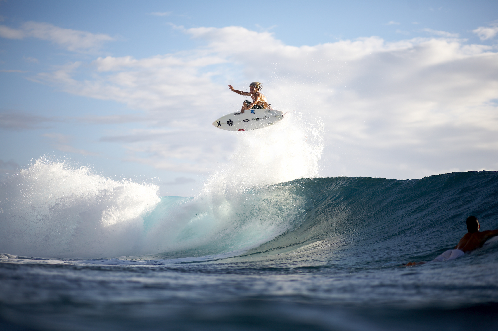
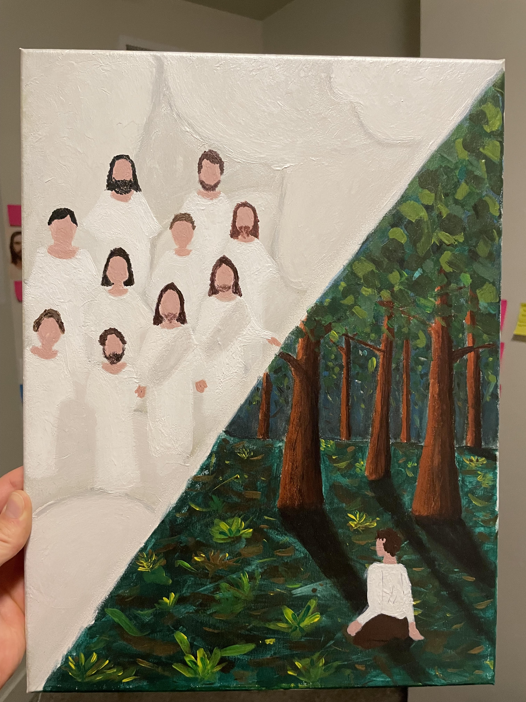

Hunter enjoys a variety of hobbies that generally include physical activity
Hunter likes to rock climb because it presents a unique physical and mental challenge. Rock climbing requires strength, endurance, balance, and flexibility, and it involves problem-solving skills to navigate the routes or problems on the wall. This combination of physical and mental engagement can be highly rewarding and satisfying for many people.
Here is a pretty cool video of Magnus Midtbø sharing some climbing tips. He is one of Hunter's favorite rock climbers!
Hunter likes to play basketball because it is a fast-paced and dynamic sport that requires a unique combination of physical and mental skills. Basketball involves running, jumping, and coordination, as well as strategic thinking and decision-making. These aspects of the game can be highly engaging and satisfying for those who enjoy a challenge.
Hunter likes to workout because it provides a sense of accomplishment and well-being. Working out can help to improve physical health, increase strength and endurance, and boost mental clarity and focus. For many people, the act of exercising can also be a stress-reliever, providing an outlet for pent-up energy and tension.
Hunter likes to surf because it provides an exciting and unique experience that can be highly enjoyable for many people. Surfing involves riding the waves of the ocean using a surfboard, requiring a combination of balance, strength, and skill. The feeling of gliding across the water can be exhilarating, providing a sense of freedom and connection to nature.
Hunter enjoys painting because it allows for a creative and expressive outlet that can be highly enjoyable and fulfilling. Painting offers a unique opportunity to explore and experiment with color, texture, and form, allowing individuals to create something entirely unique and personal.
Hunter believes that everyone should participate in physical activity so that they don't become obese. Here are some reasons for why you should participate in physical activity frequently!